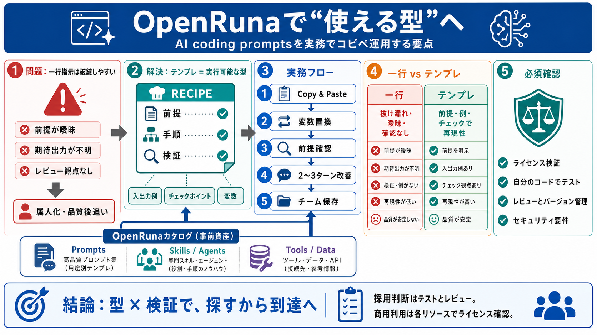

Best AI Coding Agents in 2026, Ranked - MightyBot
# Best AI Coding Agents in 2026, Ranked — MightyBot. _MightyBot applies this same agentic architecture beyond coding —[l…

# Best AI Coding Agents in 2026, Ranked — MightyBot. _MightyBot applies this same agentic architecture beyond coding —[l…
[Home](https://www.morphllm.com/)/11 AI Coding Agents Ranked (2026): Terminal-Bench Scores, Price, License. [Which Codin…
# Best AI for Coding in 2026: Complete Comparison. Comparison of the 7 best AI tools for coding in 2026: GitHub Copilot,…
[AI Coding Tools Ranked from Worst to Best (2026)](https://www.youtube.com/watch?v=zqiYTXiQq-0). . 3. [best open sou…